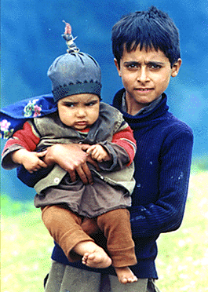

अद्वर्य
गस्सम
"adwary gassam!"
यह लिप्यन्तरण का परीक्षण है। हाँ!
इदमस्ति
सन्स्कृतग्रहणार्थिनां कृतेPeter Hook, Program in Linguistics and Department of
Asian Languages and Cultures, University of Michigan
My e-mail accounts are with yahoo.com under the name peter_e_hook and
with gmail under the name peter.e.hook
PublicationsLamaniMacro Linguistic
AreasPhotos
of Northern AreasFluid Ergativity in
GujaratiKashmiri
PagesPoguli PageShina PageBanganiA Drake Equation for Linguistic
DiversityExosingularities, pancyberspermia,
and SETI@home (a preliminary outline) South Asia Links Other links:
Transliteration
Page
JTRANS
Last update: 20 Oct 2006.